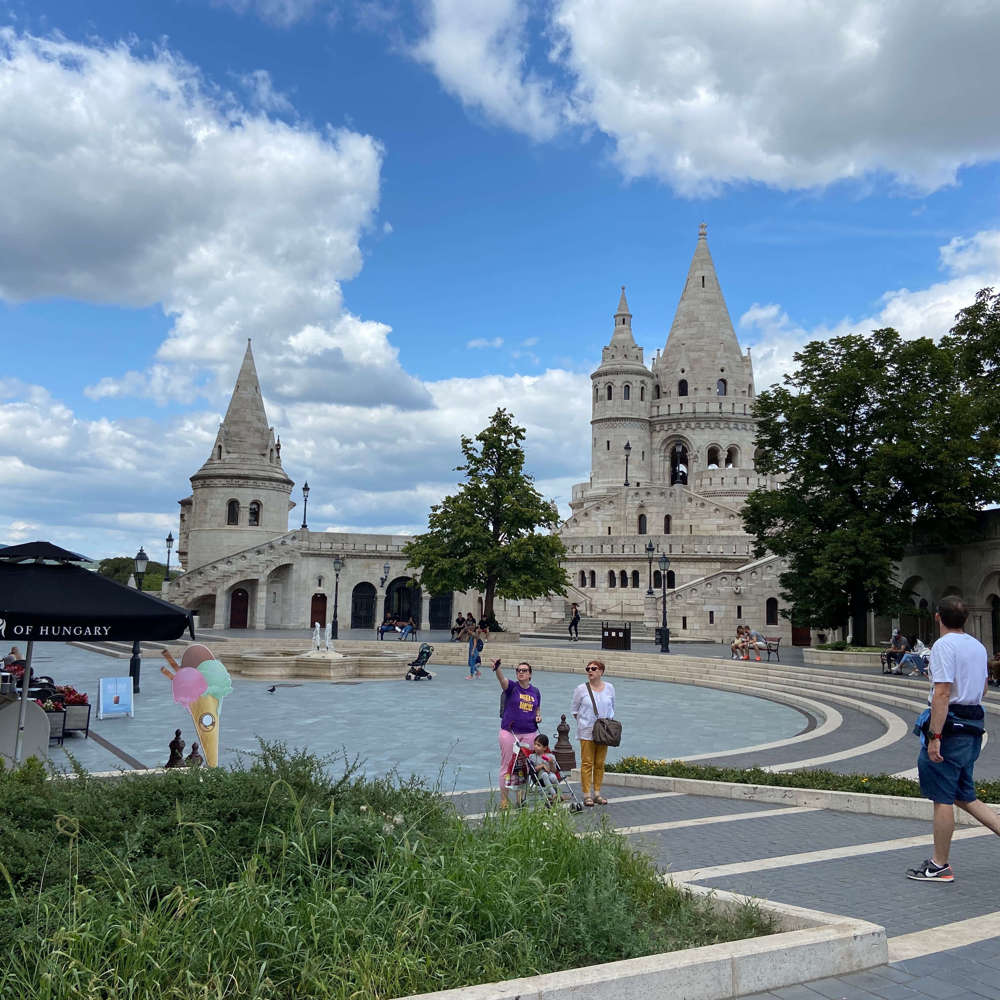
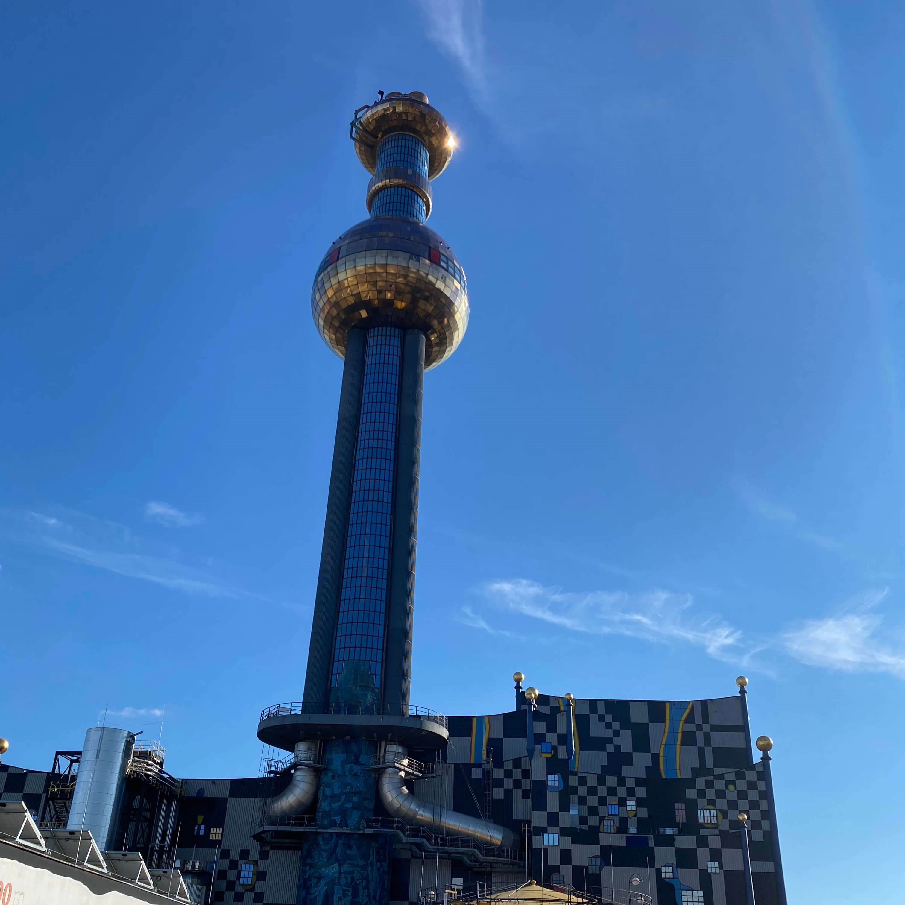
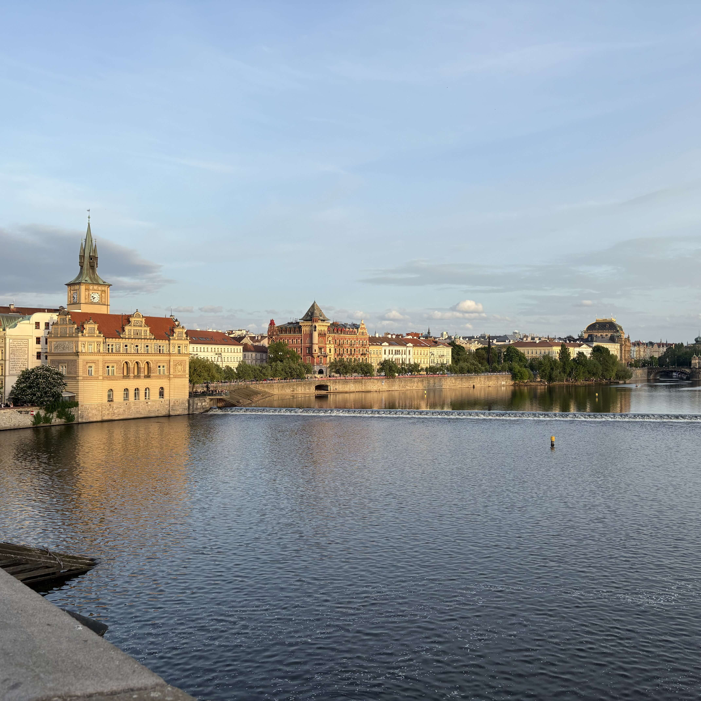
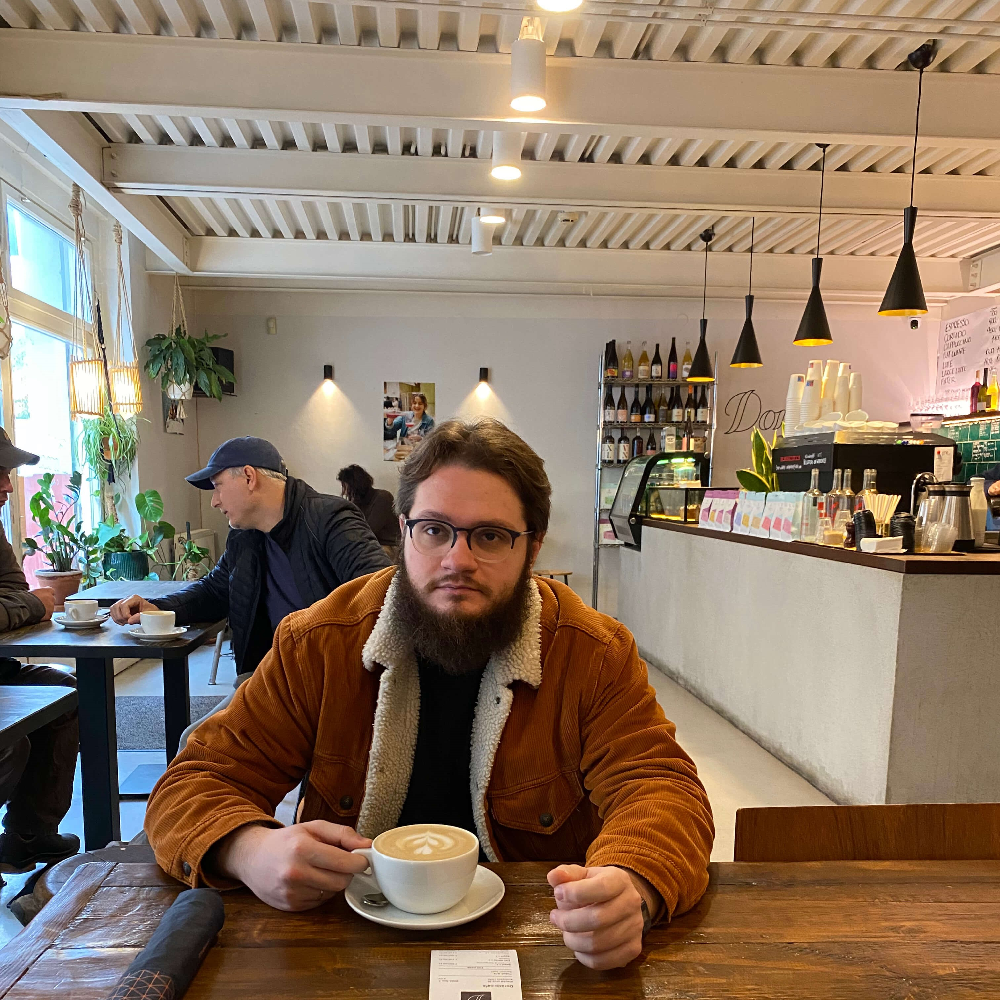

Осеннее путешествие
в Венгрию, Австрию и Чехию
Три страны, одна золотая осень. Будапешт, Вена и Прага — с гастрономией трёх культур и моим сопровождением от начала до конца.

autumn-cover.jpg
- Купальни Сечени и руин-бары Будапешта
- Ночной Дунай и подсвеченный Парламент с воды
- Дворцы Бельведер и Шёнбрунн в Вене
- Карлов мост и Пражский Град
- Гастрономия трёх культур в одном маршруте
Стамбул, пересадка
Вылет в Стамбул, гуляем по городу, вечером — вылет в Венгрию.
Купальни и сердце города
С утра — купальни Сечени. После — прогулка по городу: Рыбацкий бастион, Цепной мост, Пепельная (костяная) синагога и другие знаковые места.
Вечером — руинные бары. Это must.

budapest.jpg
Музеи и Дунай
Посещаем музей Уникума. Дальше — свободное время или купальни по желанию, Будапешт всё же столица-курорт.
Вечером — прогулка на кораблике по Дунаю. Ночной Парламент — это любовь.
Свободный день
Полностью свободный день. Подскажу винтажные магазины, виниловые пластинки, интересные сувениры и ТЦ с одеждой и обувью.
По желанию — выезд в маленькие города Венгрии или на озеро Балатон.
Дегустация и завершение
Если наберётся группа желающих — дегустационный сет из венгерских вин и сыров. Последний вечер в городе перед переездом.
Сосиски и архитектура
С утра выезжаем на поезде в Вену, заселяемся в отель. Идём есть кюрривурст — местные так обожают эти сосиски, что после оперы люди в смокингах едут их есть.
После ланча — осмотр центра: парламент, красивые улочки, венский собор, мусоросжигательный завод в майоликовом стиле (да, это действительно достопримечательность).

vienna.jpg
Дворцы и искусство
Осмотр двух дворцов: Бельведер и Шёнбрунн. Помогу купить билеты в Леопольд-музей (там Густав Климт) или в оперу.
Свободный день
Город ваш. Подскажу винтажные магазины, кофейни где пьют местные, галереи и небольшие музеи, куда сходить вечером.
Переезд и сердце города
Утром выезжаем на поезде или автобусе в Прагу, заселяемся в отель. После — знакомимся с городом: Карлов мост, Старая городская площадь с курантами, Пороховая башня.
Вечером — прогулка по центру, ужин в местном ресторане.

prague.jpg
Пражский Град
Поднимаемся в Пражский Град — один из крупнейших замковых комплексов в мире. Собор Святого Вита, старый королевский дворец, Золотая улочка.
Виды на город сверху — отдельное удовольствие. Свободное время после осмотра.
Домой
Уезжаем обратно. Подберу оптимальные билеты под ваш бюджет и помогу с логистикой, чтобы вы не потерялись.
- Гуляш
- Лангош
- Кюртёшкалач
- Эстерхази
- Сосиски
- Шницель
- Кордон блю
- Штрудель
- Свичкова
- Кнедлики
- Чешское пиво
- Трдельник
Подскажу по винам Венгрии и Австрии. Вена, кстати — единственная европейская столица, где виноградники раскинуты прямо в черте города.
- Проживание
- Моё сопровождение по маршруту
- Помощь с визой и документами
- Подбор авиабилетов
- Мои фото в дороге
- Рекомендации по местам
Оплата и визаОформляем через Венгрию. Оплата частями: 10 000 ₽ предоплата до визы + авиабилеты, остаток — двумя частями после получения визы.

group-final.jpg